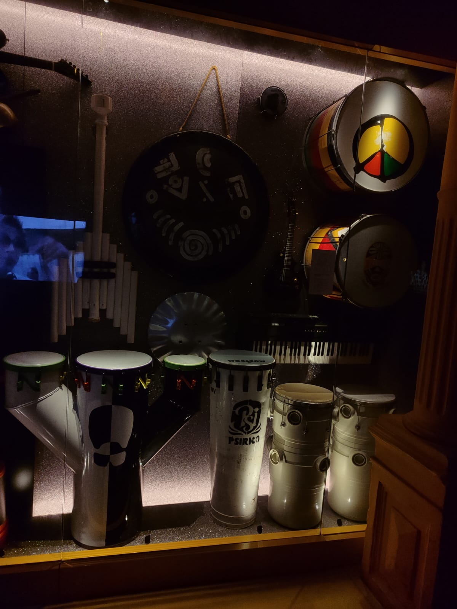
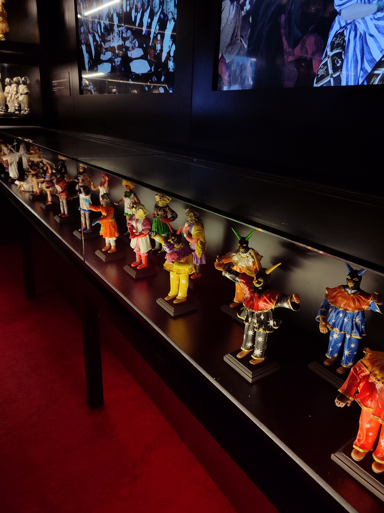
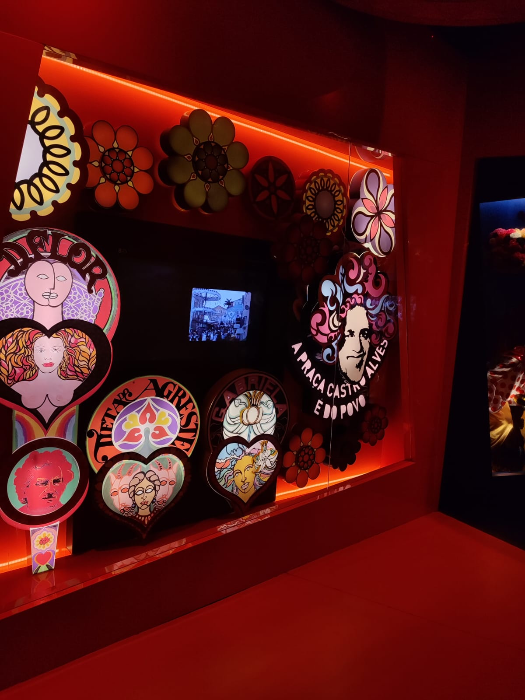

Memória & Patrimônio Afro-Brasileiro
Acervo autoral registrado no Centro Histórico de Salvador e nos museus baianos.
Destaques do Acervo Digital

Ritmos e Percussão
A evolução dos instrumentos percussivos e sua influência na música e identidade baiana.
Acessar Galeria
Máscaras e Tradição
Representações das festas populares, folclore e expressões do patrimônio imaterial.
Acessar Galeria
Arte e Cultura Popular
Registros gráficos e homenagens aos ícones da música e manifestações de rua.
Acessar Galeria